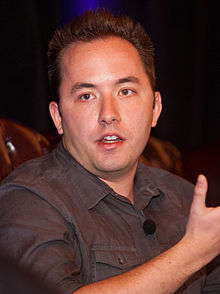

Andrew W. "Drew" Houston (pronounced "HOUS-ton"; born March 4, 1983) is an
American Internet entrepreneur who is best known for being the founder and CEO
of Dropbox, an online backup and storage service. According to Forbes magazine,
his net worth is $1.39 billion.
Drew Houston was born in Acton, Massachusetts in 1983. His father, who was a
Harvard University graduate, bought him his first computer in which he used it
to learn BASIC Programming.
He attended Acton-Boxborough Regional High School in the 1990s. He later
graduated with a degree in Computer Science from the Massachusetts Institute of
Technology, where he was a member of the Phi Delta Theta fraternity.
It was there
that he met Arash Ferdowsi who would later go on to be co-founder and CTO of
Dropbox.
Before working on Dropbox, Drew Houston worked on a number of other startups
which include Bit9, Accolade and Hubspot.
Drew Houston was named one of the most promising players aged 30 and under by
Business Week,and Dropbox has been touted as Y Combinator's most successful
investment to date.
Drew was also named among the top 30 under-30 entrepreneurs
by inc.com, and Dropbox has been called one of the 20 best startups of Silicon
Valley.
In June 2013, MIT invited Houston to serve as speaker at its annual commencement
ceremonies. In his remarks, Houston gave this advice: "They say that you're the
average of the five people you spend the most time with. Think about that for a
minute: who would be in your circle of five? I have some good news: MIT is one
of the best places in the world to start building that circle.
If I hadn't come
here, I wouldn't have met Adam, I wouldn't have met my amazing cofounder, Arash,
and there would be no Dropbox. One thing I've learned is surrounding yourself
with inspiring people is now just as important as being talented or working
hard.
Can you imagine if Michael Jordan hadn’t been in the NBA, if his circle of
five had been a bunch of guys in Italy? Your circle pushes you to be better,
just as Adam pushed me."
In April 2013, a lobbying group called FWD.us (aimed at lobbying for immigration
reform and improvements to education) was launched, with Drew Houston listed as
one of the founders.
In 2016, he endorsed Hillary Clinton for president